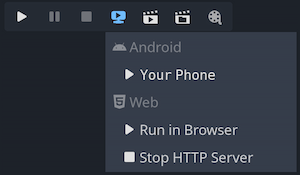

One-click deploy
What is one-click deploy?
One-click deploy is a feature that is available once a platform is properly configured and a supported device is connected to the computer. Since things can go wrong at many levels (platform may not be configured correctly, SDK may be incorrectly installed, device may be improperly configured, etc.), it's good to let the user know that it exists.
After adding an Android export preset marked as Runnable, Godot can detect when a USB device is connected to the computer and offer the user to automatically export, install and run the project (in debug mode) on the device. This feature is called one-click deploy.
Note
One-click deploy is only available once you've added an export template marked as Runnable in the Export dialog. You can mark several export presets as runnable, but only one preset per platform may be marked as runnable. If you mark a second preset in a given platform as runnable, the other preset will no longer be marked as runnable.
Supported platforms
Android: Exports the project with debugging enabled and runs it on the connected device.
Make sure to follow the steps described in Exporting for Android. Otherwise, the one-click deploy button won't appear.
If you have more than one device connected, Godot will ask you which device the project should be exported to.
iOS: Exports the project with debugging enabled and runs it on the connected device.
Make sure to follow the steps described in Exporting for iOS. Otherwise, the one-click deploy button won't appear.
For each new bundle identifier, export the project, open it in the Xcode, and build at least once to create new provisioning profile or create a provisioning profile in the Apple Developer account dashboard.
If you have more than one device connected, Godot will ask you which device the project should be exported to.
Desktop platforms: Exports the project with debugging enabled and runs it on the remote computer via SSH.
Web: Starts a local web server and runs the exported project by opening the default web browser. This is only accessible on
localhostby default. See Troubleshooting for making the exported project accessible on remote devices.
Using one-click deploy
- Android:
Enable developer mode on your mobile device then enable USB debugging in the device's settings.
After enabling USB debugging, connect the device to your PC using a USB cable.
- It's also possible to one-click deploy via wireless ADB instead of with a USB cable. In order to do this, it is necessary to:
Enable wireless debugging on the device:
Connect to the same Wi-Fi network on your mobile device and PC.
Click (can be accessed via long press on wireless debugging) to display IP, port, and pairing code.
On your PC, enter the command
adb pair <ip address>:<port>and provide the pairing code when prompted. Ifadbis not recognized, you may need to add the android-sdk's platform-tools folder to yourPATHor execute this command from there.You can verify the ADB device is successfully connected by entering
adb devicesin the terminal.
- iOS:
Install Xcode, accept Xcode license and login with your Apple Developer account.
If you are using Xcode 14 or earlier, install ios-deploy and set path to ios-deploy in the Editor Settings (see Export ⇾ iOS ⇾ iOS Deploy).
- For running on device:
Pair your mobile device with a Mac.
Enable developer mode on your device.
Device can be connected via USB or local network.
Make sure the device is on the same local network and a correct network interface is selected in the editor settings (see Network ⇾ Debug ⇾ Remote Host). By default, the editor is listening for localhost connections only.
Device screen should be unlocked.
- Desktop platforms:
Enable SSH Remote Deploy and configure connection settings in the project export setting.
Make sure there is an export preset marked as Runnable for the target platform (Android, iOS or Web).
If everything is configured correctly and with no errors, platform-specific icons will appear in the top-right corner of the editor.
Click the button to export to the desired platform in one click.

Troubleshooting
Android
If you can't see the device in the list of devices when running the
adb devices command in a terminal, it will not be visible by Godot either.
To resolve this:
Check if USB debugging is enabled and authorized on the device. Try unlocking your device and accepting the authorization prompt if you see any. If you can't see this prompt, running
adb deviceson your PC should make the authorization prompt appear on the device.Try revoking the debugging authorization in the device's developer settings, then follow the steps again.
Try using USB debugging instead of wireless debugging or vice versa. Sometimes, one of those can work better than the other.
On Linux, you may be missing the required udev rules for your device to be recognized.
Web
By default, the web server started by the editor is only accessible from
localhost. This means the web server can't be reached by other devices on
the local network or the Internet (if port forwarding is set up on the router).
This is done for security reasons, as you may not want other devices to be able
to access the exported project while you're testing it. Binding to localhost
also prevents a firewall popup from appearing when you use one-click deploy for
the web platform.
To make the local web server accessible over the local network, you'll need to
change the Export > Web > HTTP Host editor setting to 0.0.0.0. You will
also need to enable Export > Web > Use TLS as SharedArrayBuffer requires the
use of a secure connection to work, unless connecting to localhost.
However, since other clients will be connecting to a remote device, the use of
TLS is absolutely required here.
To make the local web server accessible over the Internet, you'll also need to
forward the Export > Web > HTTP Port port specified in the Editor Settings
(8060 by default) in TCP on your router. This is usually done by accessing
your router's web interface then adding a NAT rule for the port in question. For
IPv6 connections, you should allow the port in the router's IPv6 firewall
instead. Like for local network devices, you will also need to enable Export >
Web > Use TLS.
Note
When Use TLS is enabled, you will get a warning from your web browser as Godot will use a temporary self-signed certificate. You can safely ignore it and bypass the warning by clicking Advanced and then Proceed to (address).
If you have an SSL/TLS certificate that is trusted by browsers, you can specify the paths to the key and certificate files in the Export > Web > TLS Key and Export > Web > TLS Certificate. This will only work if the project is accessed through a domain name that is part of the TLS certificate.
Warning
When using one-click deploy on different projects, it's possible that a previously edited project is being shown instead. This is due to service worker caching not being cleared automatically. See Troubleshooting for instructions on unregistering the service worker, which will effectively clear the cache and resolve the issue.